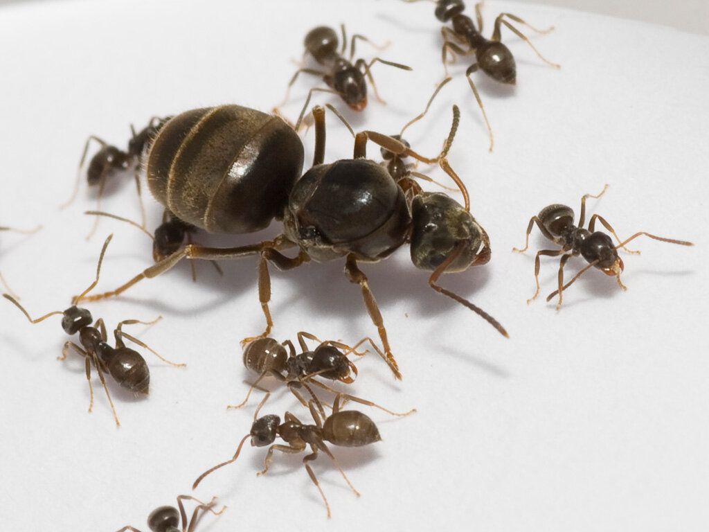

Lasius niger

Самые известные и всюду встречающиеся муравьи, Самый обычный и массовый вид фауны средней полосы Европейской части России. Одноцветные, черно-бурые. Тело покрыто густыми прилежащими волосками. На скапусе и голенях есть многочисленные отстоящие волоски. Жвалы рабочих с 8-9 зубцами.Герпетобионт. Гнезда чаще строит в почве, предпочитая умеренную влажность, но может заселять любые подходящие укрытия: пни, камни и т.п. В отличие от муравьи Lasius alienus не селится на сухих пустошах. Довольно агрессивен, использует холмики муравьи L. flavus, подавляя и пожирая этот вид. Может скапливаться у входных отверстий гнезд муравьи Lasius alienus и нападать на них.Кормится на тлях, причем равно как живущих на деревьях, так и живущих на травянистых растениях, на листьях, стеблях и корнях. Питается трупами насекомых, но иногда нападает и на живых. В садах, на полях и огородах этот муравей может приносить вред, охраняя и разводя тлей , вредящих культурным растениям. Самки основывают гнезда самостоятельно, иногда объединяясь для этого небольшими группами. Вылет крылатых происходит в разных гнездах с июня по август.Это именно тот вид, который чаще всего содержат в качестве домашних любимцев. Очень неприхотлив к условиям содержания и еде. Может жить (и успешно плодиться) в формикарии практически любого типа и формы.
Другие названия: черный садовый муравей, black ant, garden ant
Размеры: рабочие: 3—5мм, самцы: 4—6мм, матка: 7—9мм
Количество королев: моногиния
Размер кoлонии: 10K—50K
Тип муравейника: холмики, подземные, без наружных построек, с кратерами из земли, под камнями
Типичное местообитание: западнопалеарктический вид, от Португалии и Англии через всю Европу до Центральной Сибири и Монголии
Зимовка: не обязательна
Питание: всеяден, разводят тлей и червецов
Влажность: обычная ≈ 94%
Температура: обычная ≈ 28—29°С
Сложность содержания: легко
Подвижность: быстрые
Подпишись
у нас уже 5 человек